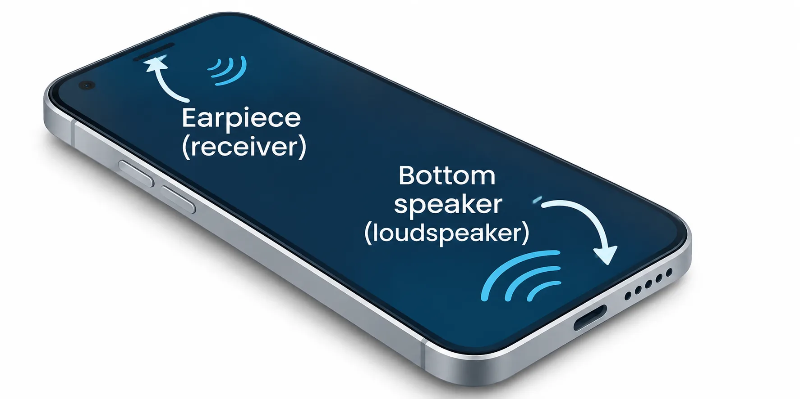

Dr. Rosa Sala
QR-code audio guides and phone loudspeakers: will visitors without headphones disturb others?

The short answer
- A QR-code audio guide (a web app that runs in the phone's browser) normally plays sound through the phone's loudspeaker. A web page cannot reliably send sound to the quiet earpiece used for phone calls.
- A native app (the kind you download from the App Store or Google Play) can control audio better: it can use the earpiece, or play only when headphones are connected. But visitors must download and install it first, and very few do.
- In most venues, simple measures are enough: visitors use their own headphones, or they lower the volume and hold the phone to the ear.
- For venues and vehicles that need more, a short listening test based on a hearing effect called Huggins pitch can check, in the browser, that a visitor is wearing headphones. Visitors who do not pass get the same content as text and pictures.
The concern is real: phone noise bothers most people
When we present a QR-code audio guide to a museum or to a boat operator, one objection comes up again and again: "People will play it out loud and disturb everyone else."
This fear is justified. In a Transport for London survey of 1,000 customers in June 2025, 70% said that loud music and phone calls without headphones are a nuisance [1]. In a YouGov survey published in April 2025, 79% of Britons said that people playing music or videos aloud on their phone bothers them, and 41% said it bothers them a great deal [2].
A quiet gallery, or a sightseeing boat where passengers sit close together for an hour, is exactly the kind of place where this matters. Some venues therefore prefer a native app or rented devices, which give more control over the sound. But these options have costs of their own.
Why a web-app audio guide plays through the loudspeaker
Most smartphones have two audio outputs.

- The earpiece sits at the top of the screen. It is made for phone calls, with the phone held against the ear. It is quiet and discreet.
- The loudspeaker usually sits at the bottom edge. It plays music, videos and speakerphone calls.
On many recent phones the earpiece also works as a second loudspeaker for music and video. In that mode it plays at loudspeaker volume, not at the quiet level of a phone call.
A native app can ask the operating system to play sound in call mode, through the earpiece. Messaging apps do this when you hold the phone to your ear to hear a voice message. A web page cannot do this reliably:
- On Android, Chrome and Firefox do not support the browser function that selects an audio output (
setSinkId) at all [3]. - On iPhone, Safari can move sound to the earpiece as a side effect of microphone use. Bug reports that cover several years of iOS versions show that this behaviour is inconsistent [4]. A web page would also have to ask every visitor for microphone access, only to play a recording.
So every browser-based audio guide plays through the loudspeaker, unless the visitor connects headphones. This is a property of mobile browsers, not a design decision of any provider.
What a native app can do, and what it costs
A native app has more control over audio than a web page. It can play through the earpiece, as in a phone call. It can also refuse to play until headphones are connected. For the noise problem alone, this works.
The cost is reach. Visitors must find the app, download it and install it before they hear anything. In our analysis of 175 official museum audio guide apps, only 2.47% of visitors downloaded them. On a one-hour boat trip, with mobile data and a departure time, the hurdle is even higher.
So the choice is not between a noisy web app and a quiet native app. It is between a guide that almost every visitor can open and a guide that few visitors will ever use. The better question is whether a web app can get the same control over headphones. It can, as we show below.
Why handing out headphones is not a good answer either
Disposable earphones. We used to offer them ourselves, and we stopped. Earphones are small electronics, and small electronics are the kind of electronic waste that is recycled least. According to the UN's Global E-waste Monitor 2024, the world produced 62 million tonnes of e-waste in 2022, and only 22.3% was documented as properly collected and recycled. For small devices the documented rate was 12% [5].
There is also an environmental dimension that museums should not overlook. At a time when climate change and waste reduction are increasingly part of public debate, visitors are becoming more conscious of the environmental footprint of the places they visit. A basket full of plastic earphones at the entrance, each pair used for an hour and then thrown away, sends a rather unfortunate message. It creates a visible contradiction between a modern visitor experience and a throwaway approach to resources. Some visitors will notice it, and some may even mention it in their reviews.
Connectors. Wired earphones must fit the visitor's phone. Today that means a 3.5 mm socket, Lightning on older iPhones, or USB-C. Since 28 December 2024, new phones sold in the EU must have USB-C [6], but the phones in visitors' pockets will stay mixed for years. A venue would need to stock three types.
Loan headphones with Bluetooth. Every visitor would have to pair the headphones with their own phone, and staff would have to help. At the end of the visit, the visitor must remove ("forget") the device on the phone, the venue must clean and charge the headphones, and the next visitor starts again. This brings back the handling and hygiene work that a bring-your-own-device guide is meant to remove.
What we recommend for most venues
In most venues, a few simple measures are enough.
- Ask visitors to bring headphones. Say it at booking, on the ticket and on your website. Many visitors carry earbuds anyway.
- Show the fallback. A visitor without headphones lowers the volume and holds the phone to the ear, as in a phone call (see image below). If the sound comes from the bottom edge of the phone, that end goes to the ear.
- Use signs and staff. A clear sign next to the QR code sets the expectation. Room attendants or crew can speak to the rare visitor who ignores it, as they would for any other behaviour.

Two things help in practice. Audio guide tracks are short and are played one at a time, not continuously like music. And in our experience, a clear instruction and a short reminder from staff are usually enough. Many of our customers work this way without supplying any headphones.
One thing does not help: making the recordings quieter. We tested this with a customer. Visitors simply turned their phones up, and visitors with weaker phones could no longer hear the guide properly even at full volume. The reason is that phones differ a lot in how loud they can play, and few people are aware of this. In 2023, GSMArena measured the loudspeakers of more than 110 phones. The loudest and the quietest model were about 10 loudness units apart, which is roughly 10 decibels [9]. As a rule of thumb, a difference of 10 decibels sounds about twice as loud. So a recording that is quiet enough on a loud phone is too quiet on a weak one. The file cannot control the volume. Only the visitor can.
The options at a glance
| Option | What works | What does not |
|---|---|---|
| Visitors' own headphones | No equipment, no handling | Not everyone brings them |
| Phone held to the ear, low volume | Nothing extra needed | Less comfortable; depends on the visitor |
| Disposable earphones | Available on the spot | Waste, cost, three connector types |
| Loan headphones with Bluetooth | Reusable | Pairing, cleaning, charging, staff time |
| Native audio guide app | Can use the earpiece or require headphones | Few visitors download it |
| QR-code audio guide with headphone check | No download; checks that headphones are in use; text version for everyone else | Adds a short test at the start |
For stricter requirements: a headphone check based on Huggins pitch
Some operators need more than good manners. A typical case is a sightseeing boat or bus where passengers cannot move away from a noisy neighbour. For these cases, Nubart has built a headphone check that runs in the browser, with no app.
The science: a sound that only exists with headphones
The check uses Huggins pitch, a hearing effect first described by Cramer and Huggins in 1958 [7]. It works a little like a 3D film.
In a 3D cinema, each eye gets a slightly different picture. Neither picture contains depth. Your brain compares the two pictures and creates the depth itself. Take off the glasses, and both eyes see both pictures at once: the depth is gone.
Huggins pitch does the same thing with sound.
- Two almost identical sounds. Each ear gets the same hiss, like the noise of a waterfall. In one ear, a very small part of that hiss is changed. The change is too small to hear.
- The brain does the rest. Each ear on its own hears only hiss. But the brain compares the two ears, notices the small difference and turns it into a faint tone. This tone is not in the left sound and not in the right sound. It exists only in the listener's head. When we move the changed part step by step, the tone becomes a short melody.
- Headphones are the 3D glasses. They give each ear its own sound. From a loudspeaker, the two sounds mix in the air, and both ears get the same mixture. The brain has nothing to compare, so the melody becomes weak or disappears.
The idea of using this effect as a headphone test comes from researchers at University College London. They ran hearing experiments online and needed to know whether the people taking part at home were really wearing headphones. So they tried it out: one group listened with headphones, another group through loudspeakers. About 80% of the headphone group heard the hidden tone every time. In the loudspeaker group, only about 20% did.
Where does that 20% come from? The participants listened through the loudspeakers of their own computers. The researchers' explanation is that someone who sits close to a left and a right loudspeaker, exactly between them, still gets the two sounds partly apart [8]. A phone cannot do that. Its speakers sit only a few centimetres from each other, so the two sounds mix completely. In our own tests, the melody was easy to hear on a laptop and impossible to hear through a phone's loudspeaker.
The test also catches a common shortcut: listening with one earbud only. With a single ear, the brain has nothing to compare, so there is no tone.
How the check works for the visitor

After choosing a language, the visitor is asked to put on headphones. There are two buttons, and each leads to a different path.
- "I have no headphones": straight to the text version, with no test. The visitor gets a picture and the text of each track. In a Nubart MOTION guide with triggered tracks, each text and picture appears automatically when the vehicle reaches the point of interest. Nothing plays out loud.
- "OK": a short listening test, then the audio guide.
- The visitor hears three sounds and taps the one with a faint melody behind the hiss. Each button lights up while its sound plays.
- This is repeated three times. All three answers must be correct.
- After a wrong answer, the visitor gets one more attempt, with the sounds in a new order. Guessing does not help much: even with both attempts, only about 7 in 100 visitors would pass by luck.
- Visitors who pass get the audio guide. Visitors who fail twice get the text version, so nobody is left without content.
Nobody is left without content: text and pictures replace the sound
This is the part we care about most. A visitor who has no headphones, or who does not pass the test, is not locked out. They follow the same tour on the screen: pictures, image sliders and the full text of each track, shown at the right moment. On a boat or a bus, each text appears as the vehicle reaches the point of interest.
Everyone gets the content. Only the sound depends on headphones.
The Huggins pitch test is not perfect. A few people can hear the melody even through a loudspeaker [8]. And some visitors with hearing loss in one ear will not pass. The same goes for someone who wears a single earbud, or whose phone is set to mono sound, and a very noisy place makes the test harder [8]. For all of them the text version is there. The check is not a hearing test, and it never decides whether someone can follow the tour. It is the same version that visitors who are deaf or hard of hearing can use.
The check does not end when the tour starts. If the headphones are disconnected on the way, the guide notices and stops the audio. This works with wired and with Bluetooth headphones.
This gives a web-app audio guide the kind of control that used to require a native app, without the download.
Conclusion: start simple, and add the check only where you need it
Our advice is to trust your visitors first. Start without the check. Ask visitors to bring headphones, and show those who have none how to listen quietly, with the volume low and the phone held to the ear. In most venues this is all it takes.
If you then receive complaints or bad reviews about noisy visitors, nothing has to be rebuilt. Switching on the headphone check in an existing Nubart audio guide takes us only a few clicks. Your QR codes, your content and your visitors' routine stay the same.
Frequently asked questions
Do QR-code audio guides play through the phone's loudspeaker?
Yes, unless the visitor connects headphones. Mobile browsers do not let a web page reliably use the quiet earpiece that phones use for calls.
Would a native app solve the loudspeaker problem?
Largely, yes. A native app can use the earpiece or require connected headphones. The price is the download: in our study of 175 official museum audio guide apps, only 2.47% of visitors downloaded them.
Can a web app check whether visitors are wearing headphones?
Not by asking the phone: a web page cannot reliably read which audio device is connected. But it can test it by sound. Nubart's headphone check plays a melody that can only be heard with headphones, and starts the audio guide for visitors who recognise it.
What is Huggins pitch?
A faint tone that the brain creates when both ears receive the same noise with a small difference in one narrow frequency band. It is heard with headphones and is weak or absent through loudspeakers [7][8].
What happens to visitors without headphones?
In the standard setup, they lower the volume and hold the phone to the ear. With the headphone check, they get the guide as text and pictures.
Does Nubart supply headphones?
No. Disposable earphones create electronic waste, and no single type fits every phone.
Sources
- Transport for London, press release, 26 August 2025: New TfL campaign encourages customers to use headphones on public transport.
- YouGov, 28 April 2025: Littering, loudspeakers and Lime bikes: what public nuisances bother Britons most?
- Can I use: browser support for
HTMLMediaElement.setSinkId, checked November 2026. - WebKit Bugzilla, bug 218012, opened 2020, last modified May 2026.
- ITU and UNITAR, Global E-waste Monitor 2024, press release of 20 March 2024.
- European Commission, 28 December 2024: EU common charger rules.
- Cramer, E. M., and Huggins, W. H. (1958). Creation of pitch through binaural interaction. Journal of the Acoustical Society of America, 30(5), 412-417.
- Milne, A. E., Bianco, R., Poole, K. C., et al. (2021). An online headphone screening test based on dichotic pitch. Behavior Research Methods, 53, 1551-1562.
- GSMArena, 30 December 2023: Here are the loudest phones we tested in 2023.
We hope you found this article useful. Subscribe to our newsletter so you don't miss any of our posts.
You may also be interested in

The adoption rate of museum audio guide apps
A deep dive into real-world data shows that fewer than 3% of museum visitors use audio guide apps, raising serious questions about their effectiveness.

Nubart's audio guides are accessible
Accessibility is a growing concern in museums. With Nubart audio guides you can meet all requirements.